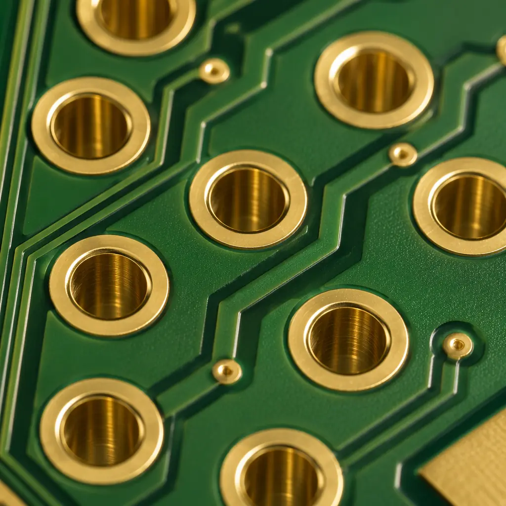

Every PCB designer eventually hits a wall where through-hole vias stop working. The board is too dense for the drill to pass through all layers. The signal reflections from a via stub are degrading eye diagrams at 28 Gbps. Or a 0.4mm-pitch BGA demands pad sizes that leave no room for a conventional via between pads. These are not edge cases — they are the standard constraints of any HDI design above 8 layers, any RF board operating above 10 GHz, and any product pushing miniaturization to its limits.
This guide covers every via type a PCB manufacturer can produce, from the 0.3mm through-hole that costs a fraction of a cent to the laser-drilled microvia that enables smartphone motherboard density. Each section includes real manufacturing tolerances, cost multipliers, and the signal integrity implications — so you can make the via decision with data, not guesswork.
Factory capability reference: Our Shenzhen facility processes PCBs with laser-drilled microvias down to 0.075mm (3 mil) diameter and mechanical through-holes from 0.15mm (6 mil). We support blind/buried structures up to any-layer interconnect (ALIVH) on boards up to 32 layers, with controlled impedance tolerance of ±5% on differential pairs crossing via transitions. This guide is written from the manufacturing floor, not a textbook.
The 5 Via Types — When to Use Each One
A via is simply a plated hole that connects copper features on different layers. The hole itself — its diameter, the layers it connects, whether it passes through the entire board or stops partway — changes everything about cost, reliability, and electrical performance. Here are the five types ranked from simplest to most complex:
Through-Hole Via (PTH)
The workhorse. A single hole drilled through the entire stackup, plated with copper (typically 20–25µm wall thickness), connecting all layers it passes through. For a 2-layer board, this is the only via type you'll use. For 4–8 layer boards, through-hole vias handle 90%+ of interconnects. The only real decision is the aspect ratio: a 0.3mm hole in a 1.6mm board gives an aspect ratio of 5.3:1 — well within the standard 8:1 limit. Push beyond 10:1 and plating quality degrades, risking barrel cracks during thermal cycling.
Cost baseline: A through-hole via costs ~$0.002 per hole at production volumes. This is your reference point for all other via cost comparisons.
Blind Via
A via that starts on an outer layer and stops at an internal layer — it does not pass through the entire board. For example, a blind via connecting Layer 1 to Layer 3 in a 6-layer stackup. The hole is mechanically drilled but only penetrates partway — the drill stops at a controlled depth before reaching the bottom of the board. This requires the PCB manufacturer to laminate and drill in stages: drill the blind vias on a partial stack, plate them, then laminate the remaining layers and drill through-holes in a second pass. Each additional lamination cycle adds cost.
Typical minimum diameter: 0.2mm mechanical. Cost multiplier: 1.5–2× vs. through-hole only, driven by the additional lamination step.

Buried Via
A via that starts and ends on internal layers — it is invisible from the board surface. In an 8-layer board, a buried via might connect Layer 3 to Layer 6, creating an internal interconnect path that doesn't consume any routing space on the outer layers. This is the key to high-density routing: bury the interconnects that don't need to reach the surface, and free up the outer layers for component fan-out and critical signal routing. Buried vias are created during sequential lamination — the internal layers are drilled, plated, and etched before being laminated into the full stackup.
Cost multiplier: 2–3× vs. through-hole only. Each set of buried vias adds a complete drill-plate-etch cycle to the inner layer fabrication. On a board with 4+ sequential lamination steps, via costs can exceed the base material cost.
Microvia (Laser-Drilled)
The defining technology of HDI PCB design. A microvia is a laser-drilled hole, typically 0.1mm or smaller in diameter, that connects an outer layer to the adjacent inner layer (1-2-1 or 1-2 configuration). The laser — usually a UV or CO₂ laser — ablates the copper and dielectric in a single pulse, creating a clean hole with tapered walls (the top is wider than the bottom). This taper actually helps plating: copper deposits more uniformly on a tapered wall than a vertical one. Microvias are stacked in HDI designs to create connections spanning multiple layers — a stacked microvia structure (Layer 1→2, then 2→3 stacked directly above) achieves layer-to-layer transitions without consuming board real estate on intermediate layers.
Minimum diameter: 0.075mm (3 mil) — laser-drilled. Cost multiplier: 2.5–4× vs. through-hole for stacked microvia structures with 2+ lamination cycles.

Via-in-Pad (VIPPO)
A via placed directly inside a component pad — the ultimate space-saving technique for fine-pitch BGAs. The via is drilled, plated, then filled with conductive or non-conductive epoxy, planarized flat, and capped with copper plating. The result is a completely flat pad surface that can accept a BGA ball as if no via existed beneath it. Without via-in-pad, a 0.5mm-pitch BGA requires dog-bone fan-out — traces and vias placed outside the pad array — which consumes significant routing space and limits breakout density. With via-in-pad, the via is directly under the ball, and no additional breakout routing is needed.
Process requirement: Via filling + planarization + copper capping. Not all manufacturers offer this — it requires specialized equipment for epoxy plugging and surface planarization. Cost multiplier: 1.3–1.8× vs. standard blind via on the same board (the filling and capping steps are the adder).
Via Stubs and Why Backdrilling Matters Above 5 GHz
When a signal travels down a through-hole via to an internal layer, the portion of the via below that layer — the section that connects to nothing — becomes an open-circuited stub. At high frequencies, this stub acts as a quarter-wave resonator, reflecting energy back toward the source and creating a notch in the insertion loss curve. The math is simple: a 1.6mm FR-4 board with εr ≈ 4.0 gives a quarter-wavelength of approximately 3.75mm at 10 GHz. A via stub longer than this creates a deep null in the frequency response.
Rule of thumb: If your signal frequency × board thickness product exceeds 15 GHz·mm, you need to evaluate backdrilling. For a standard 1.6mm board, this threshold is crossed at approximately 9.4 GHz. For thicker boards — 2.4mm, common in high-layer-count telecom and 5G PCBs — the threshold drops below 6.3 GHz.
Backdrilling solves this by re-drilling the via from the bottom side (or the side opposite the signal layer) with a slightly larger drill — typically 0.15–0.2mm oversize — to remove the unused portion of the via barrel. The remaining stub is controlled to a specified maximum length, usually 0.15–0.25mm. This eliminates the quarter-wave resonance and restores the insertion loss curve to near-ideal behavior.
Backdrilling is not free. It adds a secondary drill operation with tight depth control — the drill must stop within 0.05–0.1mm of the target layer without damaging the signal via's pad connection. For a board with 200 controlled-impedance vias requiring backdrilling, this adds roughly 30-45 minutes of NRE time. But the alternative — redesigning to a blind/buried stackup with sequential lamination — typically costs 3-5× more. For the vast majority of designs operating in the 5–28 GHz range, backdrilling delivers the signal integrity benefit of blind vias at a fraction of the cost.
| Via Strategy | Max Frequency | Stub Length | Relative Cost |
|---|---|---|---|
| Through-hole (no backdrill) | <5 GHz | Full thickness | 1.0× |
| Through-hole + backdrill | 5–28 GHz | 0.15–0.25mm | 1.15–1.25× |
| Blind via (no stub) | >28 GHz | 0 (no barrel) | 1.5–2.0× |
How Via Choice Affects PCB Cost — The Real Numbers
Designers often treat via selection as a purely electrical decision. In manufacturing, it's a cost driver that can double or halve the per-board price. Here's how each via technology impacts the three main cost components:
Lamination Cycles
Every set of blind or buried vias requires a separate lamination — the layers are pressed together, drilled, plated, then pressed again with additional layers. Each lamination cycle at a facility like ours adds approximately 12–18% to the raw board cost (excluding material). A standard 8-layer board with through-holes uses 1 lamination. The same 8-layer board with 2 sets of buried vias uses 3 laminations — adding 24–36% to the base fabrication cost. This is why understanding PCB cost factors before committing to a stackup architecture is essential: the via strategy can easily become the largest single cost driver on the BOM.
Drill Time and Tooling
Mechanical drills wear predictably: a carbide drill bit lasts approximately 3,000–5,000 hits in FR-4 before requiring replacement. Laser-drilled microvias have no consumable tooling cost — the laser beam never dulls — but each via takes roughly 0.5–1.0ms of machine time. For a board with 50,000 microvias, that's 25–50 seconds of laser time — negligible at prototype volumes, significant when multiplied across 10,000 panels per month. Through-hole vias at high density (200,000+ holes per panel) are the dominant drill-time consumer in volume production.

Yield Impact
Each via type has a characteristic defect rate. The defect rate for a standard through-hole via at a facility running IPC Class 3 process controls is approximately 0.01–0.05 per thousand holes (primarily voids in the barrel plating, detected by automated optical inspection). Blind and buried vias have a higher defect rate — roughly 0.1–0.3 per thousand — because each lamination cycle introduces new opportunities for misregistration, resin smear, or incomplete plating. Via-in-pad adds a further yield risk: incomplete epoxy fill creates voids that trap flux during reflow, causing solder joint voids under BGA balls. The defect is invisible to AOI because it's under the component — it's only detectable by X-ray inspection after assembly.
Design Rules for Reliable Vias
Via reliability is not a single parameter — it's the intersection of aspect ratio, annular ring, and plating uniformity. These three rules capture what factory data shows actually causes via failures:
Aspect ratio ≤ 8:1 for mechanical drilling
The aspect ratio is the board thickness divided by the drill diameter. A 1.6mm board with 0.2mm vias = 8:1 — right at the limit. Exceeding 8:1 means the plating solution cannot circulate adequately through the hole during electrolytic copper deposition, producing thin spots in the barrel that crack during thermal cycling. For laser-drilled microvias, the aspect ratio limit is tighter — 1:1 for reliable plating (a 0.1mm microvia should not penetrate deeper than 0.1mm of dielectric). This is why microvias typically span only one dielectric layer.
Annular ring ≥ 0.125mm (5 mil) for Class 2, ≥ 0.15mm (6 mil) for Class 3
The annular ring is the copper pad around the via hole, measured from the hole edge to the pad edge. When the drill wanders — and mechanical drills always wander, typically by 0.05–0.075mm depending on stack height and drill bit condition — a too-small annular ring results in a breakout: the hole partially exits the pad, creating a weak connection that passes electrical test but fails under thermal stress. IPC Class 3 requires a 0.15mm minimum annular ring specifically because Class 3 products must survive more aggressive thermal cycling and vibration profiles.
Via-in-pad requires flatness within 0.025mm (1 mil)
The entire point of via-in-pad is that the BGA ball cannot tell the via exists. If the filled and capped surface has any dimple or protrusion, the solder joint geometry changes — and with it, the joint reliability. Our via-in-pad process achieves surface flatness within ±0.015mm after planarization, verified by laser profilometry on every panel before solder mask application. This is the spec that separates production-ready via-in-pad from a prototype lab that can make the hole but can't make it flat.

Via Selection Decision Framework
If the technical detail above leaves you uncertain about which via type to specify, here is the decision tree our CAM engineers use when reviewing incoming designs:
- Is your board 2 layers? → Through-hole vias. There is no other option, and at 2 layers, no other option is needed. The via cost is negligible.
- Is your board 4–8 layers with conventional BGAs (0.8mm+ pitch)? → Through-hole vias, possibly with backdrilling if your fastest signals exceed 5 GHz. Evaluate backdrilling before adding blind vias — it solves the stub problem at roughly 15% of the cost adder of a blind/buried stackup.
- Are you using 0.5mm-pitch BGAs or routing >200 signals per square inch? → Blind and buried vias become necessary. Start with a 1-2-1 microvia structure (L1→L2 microvias, L2→L3 buried, etc.) before jumping to any-layer interconnect — each additional build-up layer adds cost. The same logic applies to rigid-flex designs, where the via strategy must account for dynamic flex zones.
- Are you breaking out a 0.4mm-pitch BGA with >400 balls? → Via-in-pad is your only option. No amount of dog-bone fan-out can route a 0.4mm-pitch array without consuming the entire layer for breakout. Accept the cost adder — it's cheaper than adding 4 more routing layers.
- Are your signals above 28 GHz (mmWave, 77 GHz radar, 112 Gbps PAM4)? → Eliminate all vias from the signal path or use blind vias with zero stub. Backdrilling cannot control the remaining stub closely enough at these frequencies — the 0.15mm residual stub still creates a measurable resonance above 28 GHz. Many mmWave designs route entirely on the top layer with no vias in the RF path, connecting to the rest of the circuit through non-critical low-speed vias on separate layers.
How Huaxing PCBA Validates Via Quality
Via quality is invisible to the end user — the board arrives, the components are assembled, and the product works. Or it doesn't. The difference is in the inspection regime. Here's what happens to every via-containing panel in our production flow:
- Cross-section analysis (per lot): For every production lot, one coupon is cross-sectioned and examined under 200× magnification. The cross-section reveals copper plating thickness at the barrel center (target: 20–25µm), the presence of voids or resin smear in blind/buried vias, and the quality of epoxy fill in via-in-pad structures. A lot with any via anomaly is quarantined before it reaches the customer.
- 100% AOI post-drill: Every drilled panel passes through automated optical inspection that checks hole count, position accuracy (±0.05mm tolerance), and missing or extra holes. For laser-drilled microvias, the AOI system also verifies hole diameter and circularity — a non-circular laser via indicates improper focus or pulse energy.
- TDR impedance verification on controlled-impedance vias: Every controlled-impedance design with backdrilled or blind vias includes a test coupon with the exact via structure used on the board. TDR (Time Domain Reflectometry) measurement on this coupon reveals impedance discontinuities at the via transition — a spike of more than ±10% from the target impedance triggers an engineering review.
- Thermal stress testing (sample basis): Coupons from each batch undergo 6× solder float at 288°C for 10 seconds, followed by microsection. Any barrel crack, pad lift, or plating separation is a lot rejection. This test simulates the most aggressive assembly conditions a board will ever see — and passing it guarantees the vias survive standard reflow and field operation.
Data from our floor (Q2 2026): Across approximately 460,000 panels produced in Q2, our via-related defect rate — combining all via types — was 0.018%. That's roughly 83 panels with a via anomaly that was caught before shipment. The most common anomaly was incomplete epoxy fill in via-in-pad (42% of all via defects), followed by plating voids in high-aspect-ratio through-holes (31%). Both are detectable only with the inspection regime described above — no customer would see these defects unless the manufacturer skips inspection.
Via selection is one of those rare PCB design decisions where a small upfront investment in understanding the tradeoffs pays for itself many times over. Choose the right via type for your density and frequency requirements, and the board routes cleanly, passes impedance control on the first spin, and costs what you budgeted. Choose wrong, and you're either paying for via technology you don't need, or — worse — discovering in the lab that your signal integrity is compromised by a stub you could have backdrilled for $0.15 per hole.
If you're designing a board that pushes any of the thresholds discussed here — aspect ratios above 6:1, frequencies above 5 GHz, or BGA pitches below 0.65mm — send us your stackup and we'll provide a detailed DFM review of your via strategy. Our CAM engineers do this every day. It's the fastest way to confirm your design is ready for production.